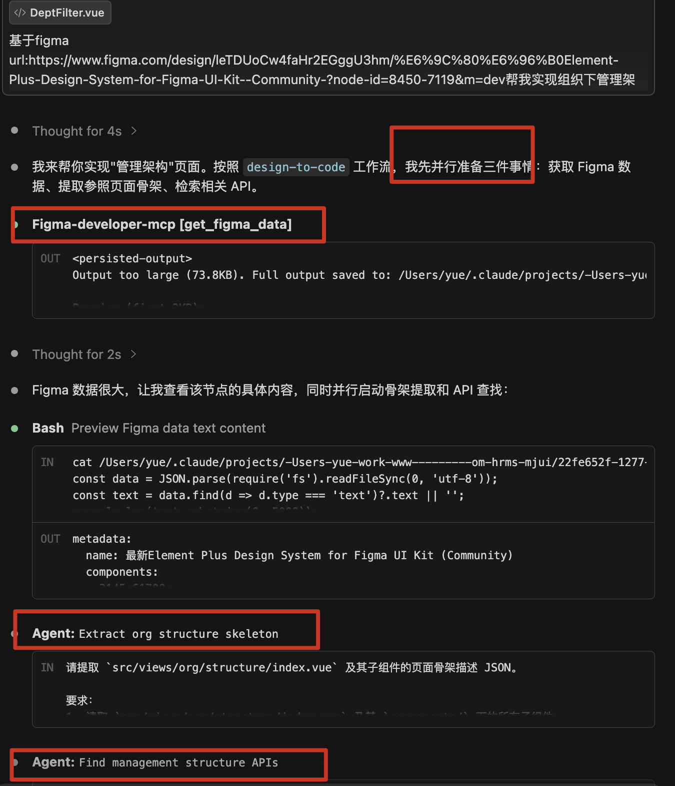
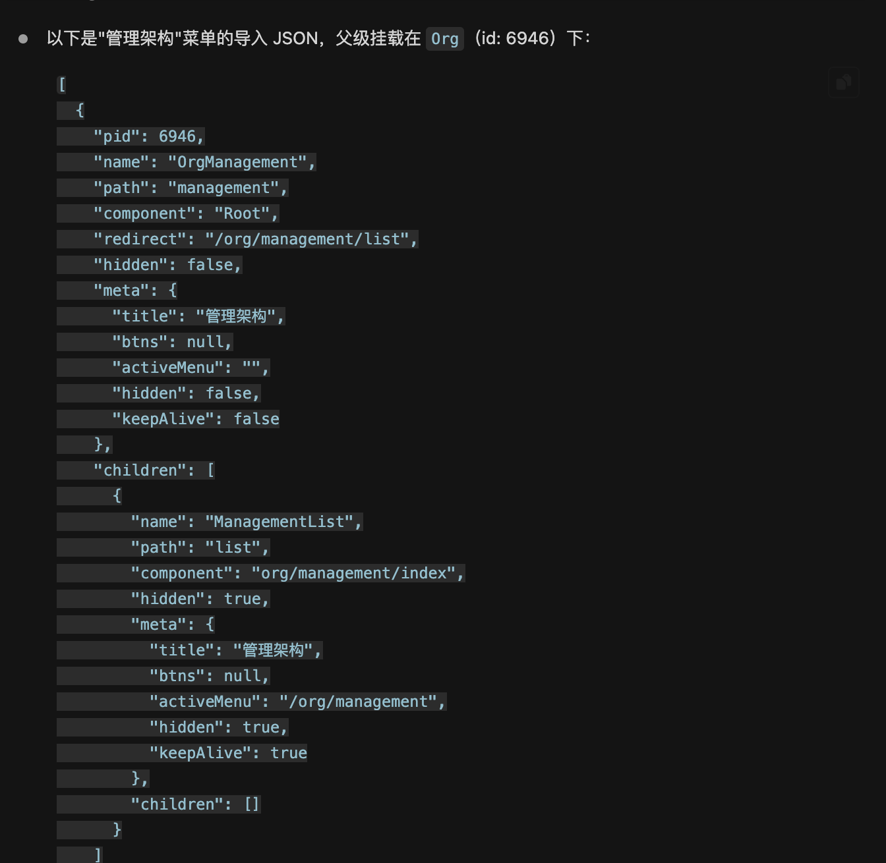
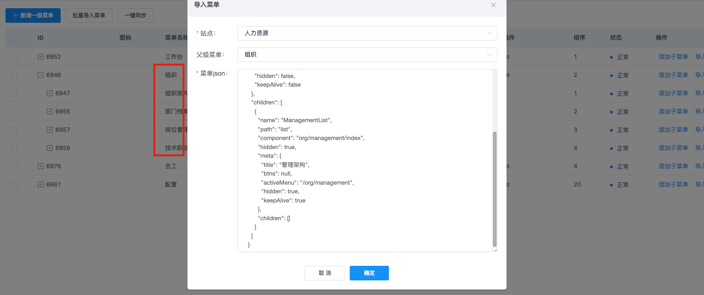

点击空白处或按 Esc 关闭
HRMS · AI Engineering Practice
基于 Claude Code、MCP、SKILL、项目知识库的前端开发工作流建设
01 · Background
列表、表单、详情、弹窗结构相似，但每个页面字段和接口不同。
HRMS + basic 模块接口数量大，手动查找和维护成本高。
Torna 管接口定义，Confluence 管页面接口关系，前端代码另有一套 API 文件。
没有项目上下文时，AI 容易自编字段、乱用组件、风格不统一。
02 · Goal
| 普通 AI 使用 | 项目级 AI 工作流 |
|---|---|
| 临时问一句，生成一段代码 | 固定触发词和可重复执行流程 |
| AI 靠上下文猜字段 | AI 读取真实接口字典和页面映射 |
| 输出风格不稳定 | CLAUDE.md + rules + templates 约束 |
| 个人经验不可复制 | 脚本、MCP、文档沉淀为项目资产 |
03 · Architecture
Claude Code / 中文触发词：更新 API、更新页面映射、更新全部、按设计稿做页面。
Scripts + MCP + Agent + Skill：Torna 拉取、Confluence 抓取、API 生成、页面映射、检索、校验、验证。
docs + CLAUDE.md：接口参数、页面接口映射、项目规范、列表页模板、技术栈约束。
AI 要稳定参与项目，不能只靠模型本身，必须给它工具和知识。
04 · Tooling Split
| 要解决的问题 | 使用的能力 | 在本项目中的作用 |
|---|---|---|
| 固定流程要稳定重复执行 | Scripts |
拉取接口、解析文档、生成 API 和映射文件。 |
| Claude 要访问内部系统 | MCP |
连接 Confluence / Figma，让 AI 能调用外部数据源。 |
| 局部任务复杂且耗上下文 | Agent |
负责 API 检索、页面骨架提取、规范校验。 |
| 高频 AI 工作流要标准化 | Project Skills |
沉淀页面生成、API 更新、菜单生成等固定流程。 |
| 项目规则需要持久化 | CLAUDE.md |
沉淀技术栈、触发词、代码规范和工作流入口。 |
05 · Implementation Logic
把接口字段、页面接口关系、项目规范、页面模板，变成 AI 可以读取的资料。
把接口同步、页面映射同步、字段检索、规范校验，变成可重复执行的流程。
AI 先查资料、再生成代码；字段映射、业务逻辑和最终质量仍由开发确认。
06 · API Automation
HRMS 从 Torna 自动拉取；basic 保留一个手动导出文件，作为公共模块补充。
统一生成前端请求函数、接口参数字典和 API 索引，避免人工维护多份资料。
AI 做页面时直接读取真实字段和函数路径，不再凭描述猜接口。
07 · Page Mapping
来源：Torna / basic export 生成的 api-params
来源：Confluence 页面接口表生成的 page-api-map
抓取 Confluence 表格，解析菜单 / 功能 / 接口，生成页面到 API 的结构化映射。
统计页面数、API 数、精确/模糊/兜底/未匹配；Diff 展示新增、移除、修改。
10 · Page Generation

09 · Menu Import
generate-menu-import 项目级 Skill：读取页面信息 +
当前菜单关系，输出完整导入结构。

11 · Realistic Boundary
12 · Value
减少查 Torna、对字段、写 API、搭页面骨架等重复工作。
字段来自真实接口，页面接口关系来自 Confluence，输出可追溯。
后端文档质量、Confluence 表格质量可以直接转化为前端效率。
scripts、MCP、CLAUDE.md、docs 形成可维护、可持续迭代的项目资产。
13 · Next Step
优先把列表页、弹窗、详情页、流程类页面中稳定的模式沉淀下来。
接口候选、字段映射、页面元素先确认，再进入代码生成，减少返工。
围绕 BaseVxeTable、分页、按钮位置、字段来源、下拉来源持续补规则。
每做几个页面复盘一次：哪些环节省时，哪些地方仍需要人工补强。
14 · Risk Control
| 风险点 | 控制方式 |
|---|---|
| 接口文档不准确 | Torna 作为源头，生成后仍由前端 review 关键字段和调用方式。 |
| 页面接口关系不准确 | Confluence 同步输出匹配统计和 Diff，变化可追踪、可回看。 |
| 生成代码不符合项目规范 | CLAUDE.md、rules、模板共同约束，必要时再做 code-review / verify。 |
| Token / Cookie 泄露 | 凭证放用户本地配置目录，不进 Git、不进入对话上下文。 |
| 工具链执行异常 | 保留 raw / JSON 中间产物，问题可定位到拉取、解析、匹配或生成阶段。 |